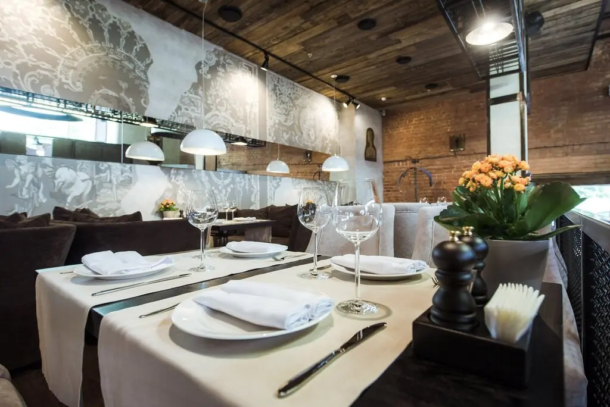
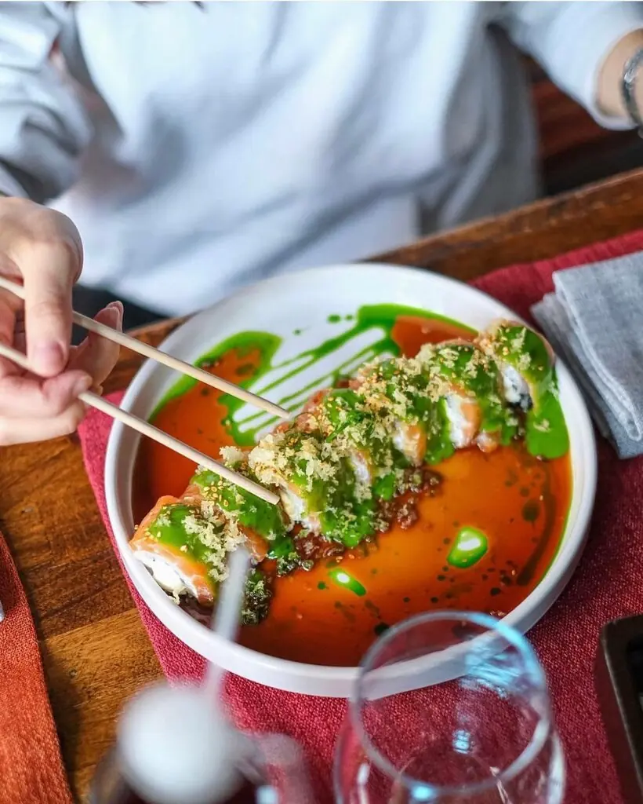
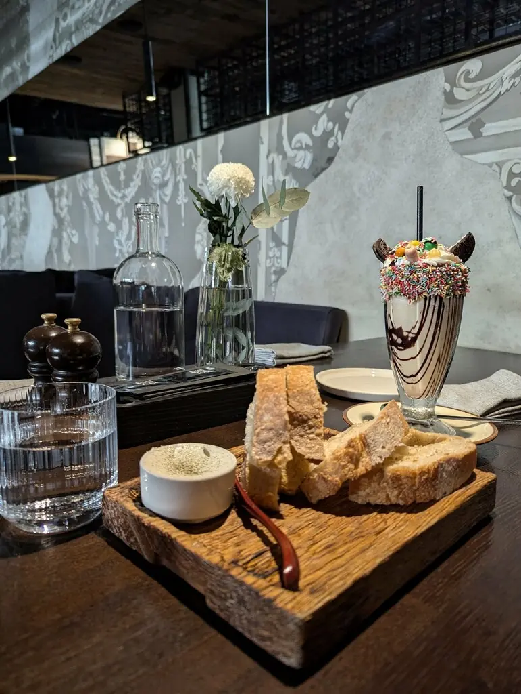
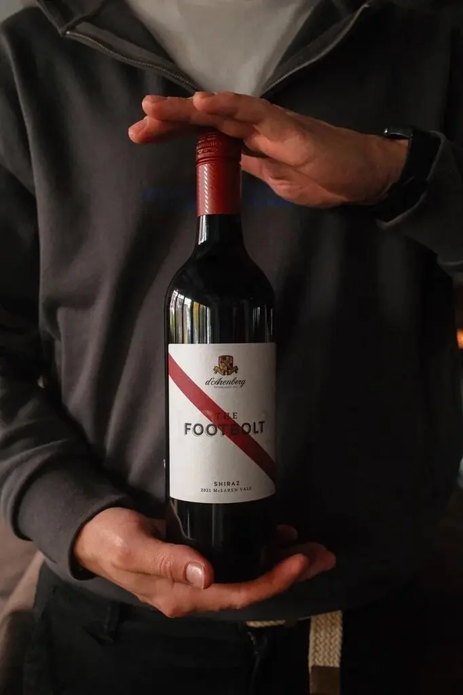

Marco Polo
Ресторан гастрономических путешествий. Паспорт не нужен, чемодан тоже. Маршрут начинается за столом на Чернышевского.
5,0 · 2146 оценок

Маршрут ужина
Стоянка первая
Закуски
Паштет из печени индейки690 ₽
Карпаччо из говядины, соус тоннато590 ₽
Тартар из говядины, мусс из пармезана850 ₽

Стоянка вторая
Огонь и море
Лепёшка с ягнёнком750 ₽
Креветки гриль, цукини950 ₽
Говяжья вырезка, вешенки890 ₽

Стоянка третья
Погреб
Сомелье покажет бутылку лично. Гости не раз возвращаются за вином и за самим домом из кирпича.

Часть меню с Яндекс Карт, цены уточняйте у официанта.
Записки путешественников
Не сидеть же в поезде. Поезд Москва — Магнитогорск с двухчасовой остановкой в Уфе.Stas Novi
Всегда очень вкусно. Профессиональное обслуживание и внимание к посетителям.Александр 🐳
Ресторан Marco Polo — моё место силы и заведение с потрясающей душой!Неля Матвеева